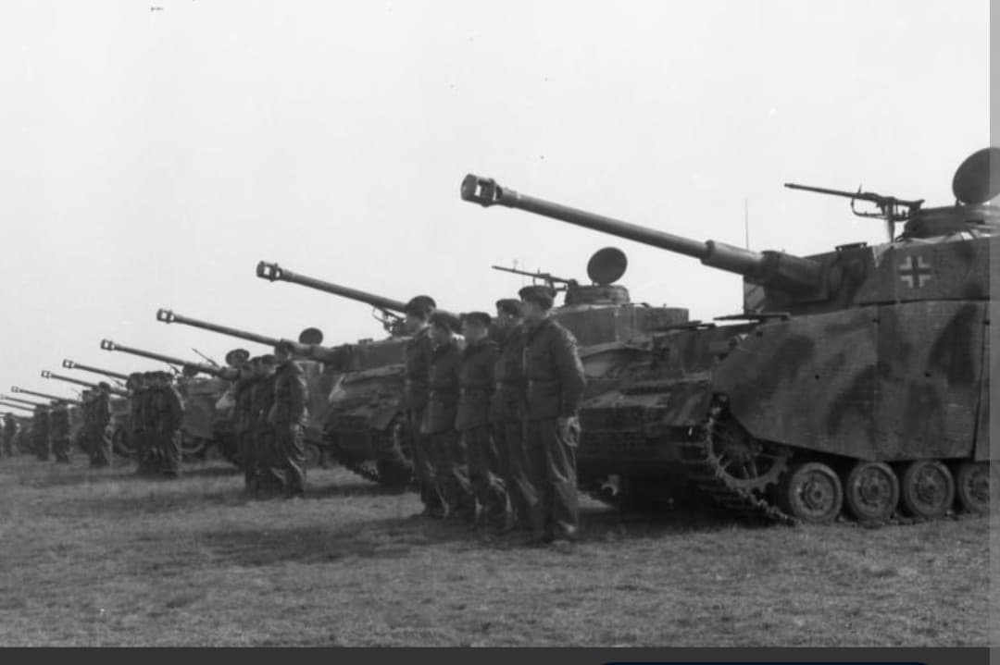
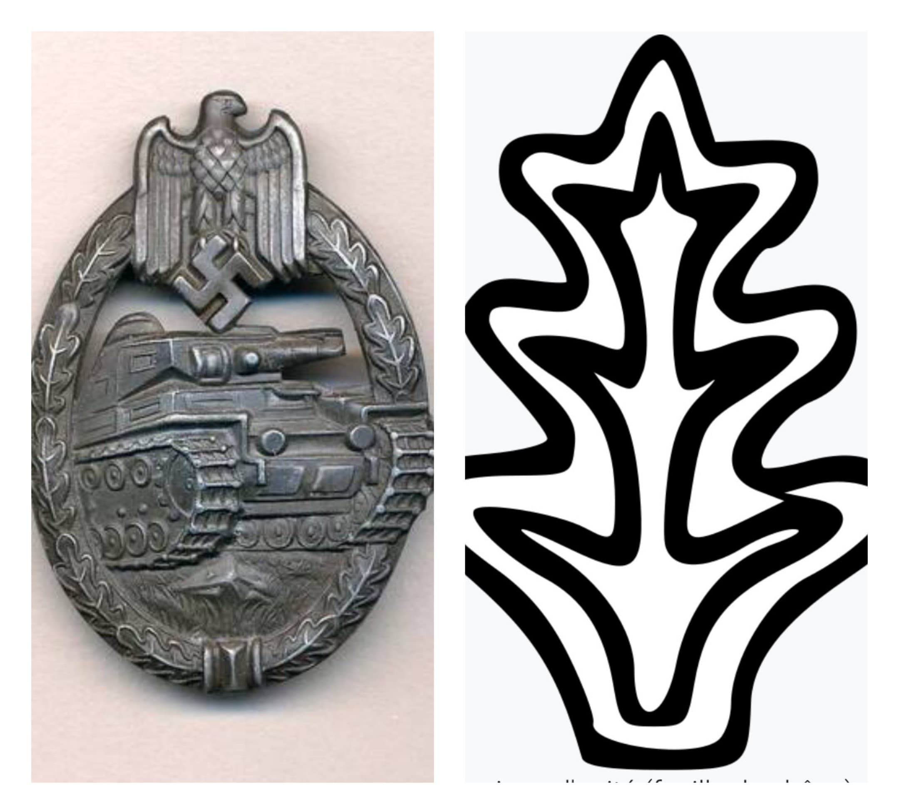
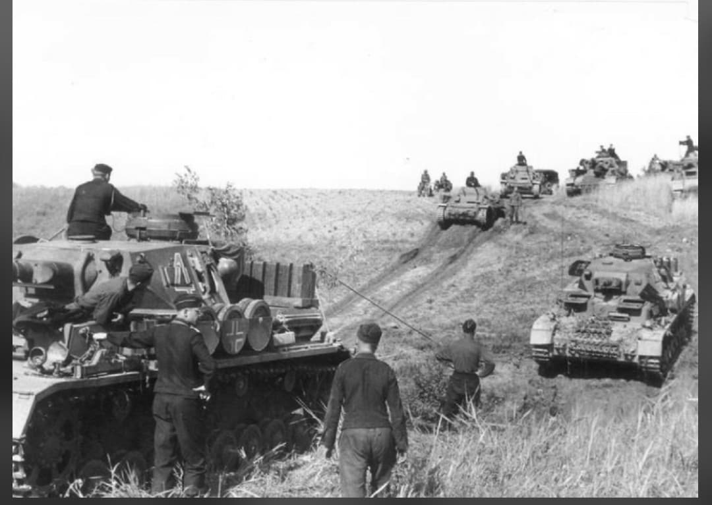

La première unité blindée de la Wehrmacht : de la percée de Sedan à l'enfer du front de l'Est

Créée le 15 octobre 1935 à Weimar sous le commandement du général Maximilian von Weichs, la 1. Panzer-Division est la toute première division blindée permanente établie au sein de la Wehrmacht.
Véritable laboratoire des doctrines de la guerre éclair (*Blitzkrieg*) théorisées par le général Heinz Guderian, la division servira d'unité modèle pour le développement du corps blindé allemand et participera aux plus grandes offensives de la Seconde Guerre mondiale.
Formée à partir du cadre de la 3e Division de Cavalerie de la Reichswehr, la division rassemble à sa création le *Panzer-Regiment 1* et le *Panzer-Regiment 2*. Elle réunit des équipages hautement entraînés sur les premiers blindés légers (Panzer I et Panzer II).
Son insigne tactique le plus célèbre, peint sur la superstructure des véhicules et des chars, consiste en un **« X » stylisé traversé d'une barre verticale blanche**, symbole d'identification rapide sur le champ de bataille.

En septembre 1939, la division participe à l'invasion de la Pologne au sein du XVIe Corps motorisé, fonçant vers Varsovie.
En mai 1940, lors de la campagne de France, la 1. Panzer-Division est le fer de lance du *XIX. Armeekorps* du général **Heinz Guderian**. Elle réalise la traversée décisive du massif des Ardennes et réussit le franchissement historique de la Meuse à **Sedan** le 13 mai 1940, avant de foncer vers la Manche et d'encercler les forces alliées dans le Nord.

Rééquipée avec des chars Panzer III et IV, la division est engagée dès juin 1941 dans l'**Opération Barbarossa** (Groupe d'Armées Nord) et progresse à travers les pays baltes jusqu'aux portes de Léningrad, avant d'être redirigée vers la bataille de Moscou.
Les années suivantes la voient engagée dans des combats défensifs épuisants au centre et au sud du front de l'Est (secteur de Rzhev, bataille de Koursk, rupture du siège de Korsun-Tcherkassy). En 1945, très diminuée, la division affronte l'Armée Rouge en Hongrie avant de battre en retraite vers l'Autriche, où ses survivants se rendent aux forces américaines en mai 1945.
Ayant traversé le conflit du premier au dernier jour, la 1. Panzer-Division est considérée comme l'une des unités mécanisées les plus expérimentées mais aussi les plus éprouvées de l'armée allemande.
L'étude de ses mouvements tactiques en mai 1940 à Sedan demeure aujourd'hui encore un cas d'école dans les académies militaires pour illustrer le concept de percée blindée concentrée.
Page du Musée HOP WW2 – Section Unités & Divisions Célèbres